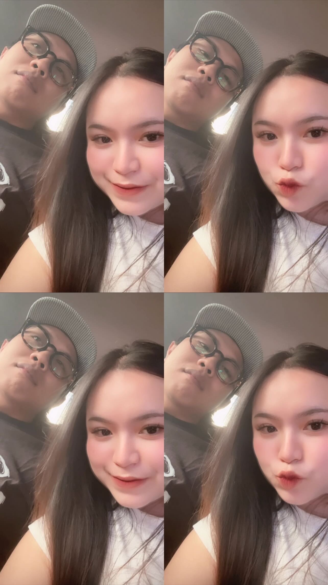
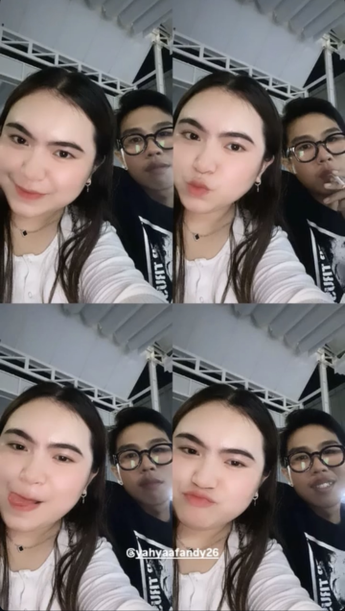
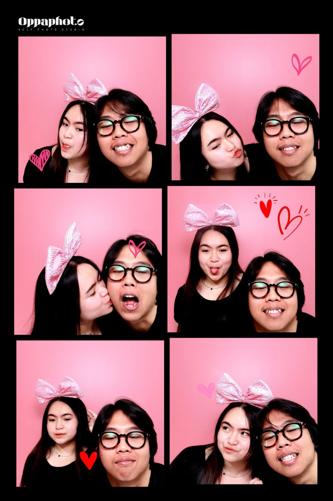
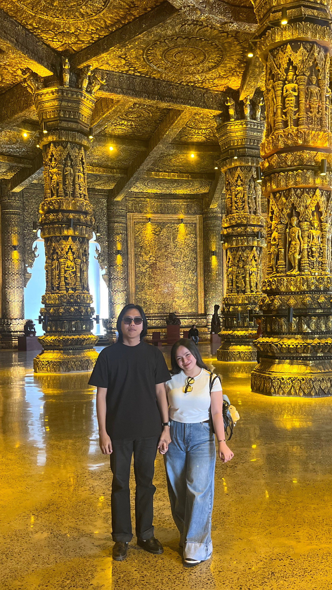

Terima kasih karena pernah menjadi bagian dari cerita indah
dalam hidupku. Kamu bukan hanya sekadar seseorang, tapi kamu
adalah salah satu alasan aku percaya bahwa cinta itu nyata.

Dulu kita, sekarang kenangan. ♡
♫ Lesung Pipi
Raim Laode
Lagu ini, untuk semua kenangan kita... ♡
01. Awal Kita ♡
(Awal Pertemuan)
Awal dari cerita kita ♡
Semua berawal dari hal sederhana, pertemuan yang tak pernah
aku sangka akan membawa kita sejauh ini. Dari obrolan yang
awalnya biasa saja, akhirnya menjadi sesuatu yang berarti.
Kamu datang di waktu yang tepat, meski akhirnya kita harus berpisah.
Kamu adalah awal dari semua cerita indah ini. ♡
02. Hari-Hari Bersama ♡
(Momen Indah)

Hal kecil yang berarti
Banyak sekali momen yang kita lewati bersama. Tertawa,
jalan-jalan, makan bareng, nonton, sampai hal-hal kecil yang
selalu terasa spesial. Kamu selalu berhasil membuat hari-hariku
terasa lebih berwarna. Setiap kenangan itu akan selalu aku simpan di hati.
Terima kasih pernah menjadi bagian dari hidupku. ♡
03. Kenangan yang Tak Terlupakan ♡
(Suka & Duka)

Kenangan yang tersimpan
Kita pernah bahagia, tapi juga pernah bertengkar. Kita pernah
saling menguatkan, tapi juga pernah kecewa. Semua itu tetap
menjadi bagian dari cerita kita. Terima kasih karena sudah
membuatku merasakan cinta yang tulus, meski akhirnya harus berakhir di sini.
Semua kenangan itu akan selalu hidup di hati. ♡
04. Sampai di Sini ♡
(Perpisahan)

Jalan kita kini berbeda
Sekarang, kita harus berjalan di jalan masing-masing. Ini bukan
akhir dari segalanya, tapi ini adalah akhir dari cerita kita.
Aku sudah berusaha sebaik mungkin. Aku melepaskanmu dengan ikhlas,
karena memaksakan hanya akan menyakiti kita berdua.
Terima kasih untuk semua yang pernah kamu berikan. ♡
Dulu kita berjuang bersama, sekarang kita merelakan bersama. ♡
✉ Pesan Terakhir
Untukmu,
Aku sudah ikhlas. Aku tidak menyimpan rasa benci, hanya doa
yang tulus agar kamu selalu bahagia dengan pilihanmu.
Aku harap kamu benar-benar bahagia, karena kamu pantas mendapatkan
yang terbaik. Semoga langkahmu selalu dimudahkan dan kamu selalu
dalam lindungan Allah.
Sekali lagi, terima kasih untuk semuanya. Sekarang, aku hanya
ingin kamu bahagia dengan jalan yang kamu yakini terbaik.